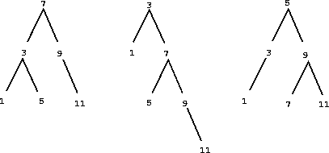

In the previous examples we built representations for two kinds of compound data objects: rational numbers and algebraic expressions. In one of these examples we had the choice of simplifying (reducing) the expressions at either construction time or selection time, but other than that the choice of a representation for these structures in terms of lists was straightforward. When we turn to the representation of sets, the choice of a representation is not so obvious. Indeed, there are a number of possible representations, and they differ significantly from one another in several ways.
Informally, a set is simply a collection of distinct objects. To give
a more precise definition we can employ the method of data
abstraction. That is, we define set
by specifying the operations
that are to be used on sets. These are union_set,
intersection_set, is_element_of_set, and adjoin_set.
The function is_element_of_set is a predicate that determines whether a given
element is a member of a set.
The function adjoin_set takes an object and a
set as arguments and returns a set that contains the elements of the
original set and also the adjoined element.
The function union_set computes
the union of two sets, which is the set containing each element that
appears in either argument.
The function intersection_set computes the
intersection of two sets, which is the set containing only elements
that appear in both arguments. From the viewpoint of data abstraction, we
are free to design any representation that implements these operations
in a way consistent with the interpretations given above.[1]
Sets as unordered lists
One way to represent a set is as a list of its elements in which no element appears more than once. The empty set is represented by the empty list. In this representation, is_element_of_set is similar to the function memq of Section . It uses is_equal instead of === so that the set elements need not be primitive values:
function is_element_of_set(x,set) {
if (is_empty_list(set))
return false;
else if (is_equal(x,head(set)))
return true;
else
return is_element_of_set(x,tail(set));
}
[Open in IDE]
Using this, we can write adjoin_set. If the object to be adjoined is already in the set, we just return the set. Otherwise, we use pair to add the object to the list that represents the set:
function adjoin_set(x,set) {
if (is_element_of_set(x,set))
return set;
else return pair(x,set);
}
[Open in IDE]
For intersection_set we can use a recursive strategy. If we know how to form the intersection of set2 and the tail of set1, we only need to decide whether to include the head of set1 in this. But this depends on whether head(set1) is also in set2. Here is the resulting function:
function intersection_set(set1,set2) {
if (is_empty_list(set1) || is_empty_list(set2))
return [];
else if (is_element_of_set(head(set1),set2))
return pair(head(set1),
intersection_set(tail(set1),set2));
else
return intersection_set(tail(set1),set2);
}
[Open in IDE]
In designing a representation, one of the issues we should be concerned with is efficiency. Consider the number of steps required by our set operations. Since they all use is_element_of_set, the speed of this operation has a major impact on the efficiency of the set implementation as a whole. Now, in order to check whether an object is a member of a set, is_element_of_set may have to scan the entire set. (In the worst case, the object turns out not to be in the set.) Hence, if the set has $n$ elements, is_element_of_set might take up to $n$ steps. Thus, the number of steps required grows as $\Theta(n)$. The number of steps required by adjoin-set, which uses this operation, also grows as $\Theta(n)$. For intersection_set, which does an is_element_of_set check for each element of set1, the number of steps required grows as the product of the sizes of the sets involved, or $\Theta(n^{2})$ for two sets of size $n$. The same will be true of union_set.
Sets as ordered lists
One way to speed up our set operations is to change the representation so that the set elements are listed in increasing order. To do this, we need some way to compare two objects so that we can say which is bigger. For example, we could compare symbols lexicographically, or we could agree on some method for assigning a unique number to an object and then compare the elements by comparing the corresponding numbers. To keep our discussion simple, we will consider only the case where the set elements are numbers, so that we can compare elements using > and <. We will represent a set of numbers by listing its elements in increasing order. Whereas our first representation above allowed us to represent the set $\{1,3,6,10\}$ by listing the elements in any order, our new representation allows only the list [1,[3,[6,[10,[]]]]].
One advantage of ordering shows up in is_element_of_set: In checking for the presence of an item, we no longer have to scan the entire set. If we reach a set element that is larger than the item we are looking for, then we know that the item is not in the set:
function is_element_of_set(x,set) {
if (is_empty_list(set))
return false;
else if (x === head(set))
return true;
else if (x < head(set))
return false;
else
return is_element_of_set(x,tail(set));
}
[Open in IDE]
How many steps does this save? In the worst case, the item we are looking for may be the largest one in the set, so the number of steps is the same as for the unordered representation. On the other hand, if we search for items of many different sizes we can expect that sometimes we will be able to stop searching at a point near the beginning of the list and that other times we will still need to examine most of the list. On the average we should expect to have to examine about half of the items in the set. Thus, the average number of steps required will be about $n/2$. This is still $\Theta(n)$ growth, but it does save us, on the average, a factor of 2 in number of steps over the previous implementation.
We obtain a more impressive speedup with intersection_set. In the unordered representation this operation required $\Theta(n^2)$ steps, because we performed a complete scan of set2 for each element of set1. But with the ordered representation, we can use a more clever method. Begin by comparing the initial elements, x1 and x2, of the two sets. If x1 equals x2, then that gives an element of the intersection, and the rest of the intersection is the intersection of the tails of the two sets. Suppose, however, that x1 is less than x2. Since x2 is the smallest element in set2, we can immediately conclude that x1 cannot appear anywhere in set2 and hence is not in the intersection. Hence, the intersection is equal to the intersection of set2 with the tail of set1. Similarly, if x2 is less than x1, then the intersection is given by the intersection of set1 with the tail of set2. Here is the function:
function intersection_set(set1,set2) {
if (is_empty_list(set1) || is_empty_list(set2))
return [];
else {
var x1 = head(set1);
var x2 = head(set2);
if (x1 === x2)
return pair(x1,intersection_set(tail(set1),
tail(set2)));
else if (x1 < x2)
return intersection_set(tail(set1),
set2);
else if (x2 < x1)
return intersection_set(set1,
tail(set2));
}
}
[Open in IDE]
To estimate the number of steps required by this process, observe that at each step we reduce the intersection problem to computing intersections of smaller sets—removing the first element from set1 or set2 or both. Thus, the number of steps required is at most the sum of the sizes of set1 and set2, rather than the product of the sizes as with the unordered representation. This is $\Theta(n)$ growth rather than $\Theta(n^2)$—a considerable speedup, even for sets of moderate size.
Sets as binary trees
We can do better than the ordered-list representation by arranging the
set elements in the form of a tree. Each node of the tree holds one
element of the set, called the entry
at that node, and a link to
each of two other (possibly empty) nodes. The left
link points to
elements smaller than the one at the node, and the right
link to
elements greater than the one at the node.
Figure shows some trees that represent the set
$\{1,3,5,7,9,11\}$. The same set may be represented by a tree in a
number of different ways. The only thing we require for a valid
representation is that all elements in the left subtree be smaller
than the node entry and that all elements in the right subtree be
larger.

The advantage of the tree representation is this: Suppose we want to
check whether a number $x$ is contained in a set. We begin by
comparing $x$ with the entry in the top node. If $x$ is less than
this, we know that we need only search the left subtree; if $x$ is
greater, we need only search the right subtree. Now, if the tree is
balanced,
each of these subtrees will be about half the size of
the original. Thus, in one step we have reduced the problem of
searching a tree of size $n$ to searching a tree of size $n/2$. Since
the size of the tree is halved at each step, we should expect that the
number of steps needed to search a tree of size $n$ grows as $\Theta(\log
n)$.[2] For large sets, this will
be a significant speedup over the previous representations.
We can represent trees by using lists. Each node will be a list of three items: the entry at the node, the left subtree, and the right subtree. A left or a right subtree of the empty list will indicate that there is no subtree connected there. We can describe this representation by the following functions:[3]
function entry(tree) {
return head(tree);
}
function left_branch(tree) {
return head(tail(tree);
}
function right_branch(tree) {
return head(tail(tail(tree)));
}
function make_tree(entry,left,right) {
return list(entry,left,right);
}
[Open in IDE]
entry(
left_branch(
right_branch(
make_tree(
10,
[],
make_tree(
30,
make_tree(20,[],[]),
[])))))
[Open in IDE]
Now we can write the is_element_of_set function using the strategy described above:
function is_element_of_set(x,set) {
if (is_empty_list(set))
return false;
else if (x === entry(set))
return true;
else if (x < entry(set))
return is_element_of_set(x,left_branch(set));
else if (x > entry(set))
return is_element_of_set(x,right_branch(set));
[Open in IDE]
Adjoining an item to a set is implemented similarly and also requires $\Theta(\log n)$ steps. To adjoin an item x, we compare x with the node entry to determine whether x should be added to the right or to the left branch, and having adjoined x to the appropriate branch we piece this newly constructed branch together with the original entry and the other branch. If x is equal to the entry, we just return the node. If we are asked to adjoin x to an empty tree, we generate a tree that has x as the entry and empty right and left branches. Here is the function:
function adjoin_set(x,set) {
if (is_empty_list(set))
return make_tree(x,[],[]);
else if (x === entry(set))
return set;
else if (x < entry(set))
return make_tree(entry(set),
adjoin_set(x,left_branch(set)),
right_branch(set));
else if (x > entry(set))
return make_tree(entry(set),
left_branch(set),
adjoin_set(x,right_branch(set)));
}
[Open in IDE]
The above claim that searching the tree can be performed in a logarithmic
number of steps
rests on the assumption that the tree is
balanced,
i.e., that the
left and the right subtree of every tree have approximately the same
number of elements, so that each subtree contains about half the
elements of its parent. But how can we be certain that the trees we
construct will be balanced? Even if we start with a balanced tree,
adding elements with adjoin_set may produce an unbalanced
result. Since the position of a newly adjoined element depends on how
the element compares with the items already in the set, we can expect
that if we add elements randomly
the tree will tend to be balanced
on the average. But this is not a guarantee. For example, if we
start with an empty set and adjoin the numbers 1 through 7 in sequence
we end up with the highly unbalanced tree shown in
Figure . In this tree all the left subtrees
are empty, so it has no advantage over a simple ordered list. One
way to solve this problem is to define an operation that transforms an
arbitrary tree into a balanced tree with the same elements. Then we
can perform this transformation after every few adjoin_set
operations to keep our set in balance. There are also other ways to
solve this problem, most of which involve designing new data
structures for which searching and insertion both can be done in
$\Theta(\log n)$ steps.[4]

function tree_to_list_1(tree) {
if (is_empty_list(tree))
return [];
else
return append(tree_to_list_1(left_branch(tree)),
pair(entry(tree),
tree_to_list_1(right_branch(tree))));
}
function tree_to_list_2(tree) {
function copy_to_list(tree,result_list) {
if (is_empty_list(tree))
return result_list;
else
return copy_to_list(left_branch(tree),
pair(entry(tree),
copy_to_list(right_branch(tree),
result_list)));
}
return copy_to_list(tree,[]);
}
[Open in IDE]
- Do the two functions produce the same result for every tree? If not, how do the results differ? What lists do the two functions produce for the trees in Figure ?
- Do the two functions have the same order of growth in the number of steps required to convert a balanced tree with $n$ elements to a list? If not, which one grows more slowly?
function list_to_tree(elements) {
return head(partial_tree(elements,length(elements)));
}
function partial_tree(elts,n) {
if (n === 0)
return pair([],elts);
else {
var left_size = quotient(n - 1,2);
var left_result = partial_tree(elts,left_size);
var left_tree = head(left_result);
var non_left_elts = tail(left_result);
var right_size = n - (left_size + 1);
var this_entry = head(non_left_elts);
var right_result = partial_tree(tail(non_left_elts),
right_size);
var right_tree = head(right_result);
var remaining_elts = tail(right_result);
return pair(make_tree(this_entry,left_tree,right_tree),
remaining_elts);
[Open in IDE]
- Write a short paragraph explaining as clearly as you can how partial_tree works. Draw the tree produced by list_to_tree for the list [1,[3,[5,[7,[9,[11,[]]]]]]].
- What is the order of growth in the number of steps required by list_to_tree to convert a list of $n$ elements?
Sets and information retrieval
We have examined options for using lists to represent sets and have seen how the choice of representation for a data object can have a large impact on the performance of the programs that use the data. Another reason for concentrating on sets is that the techniques discussed here appear again and again in applications involving information retrieval.
Consider a data base containing a large number of individual records, such as the personnel files for a company or the transactions in an accounting system. A typical data-management system spends a large amount of time accessing or modifying the data in the records and therefore requires an efficient method for accessing records. This is done by identifying a part of each record to serve as an identifying key. A key can be anything that uniquely identifies the record. For a personnel file, it might be an employee's ID number. For an accounting system, it might be a transaction number. Whatever the key is, when we define the record as a data structure we should include a key selector function that retrieves the key associated with a given record.
Now we represent the data base as a set of records. To locate the record with a given key we use a function lookup, which takes as arguments a key and a data base and which returns the record that has that key, or false if there is no such record. The function lookup is implemented in almost the same way as is_element_of_set. For example, if the set of records is implemented as an unordered list, we could use
function lookup(given_key,set_of_records) {
if (is_empty_list(set_of_records))
return false;
else if (is_equal(given_key,key(head(set_of_records))))
return head(set_of_records);
else
return lookup(given_key,tail(set_of_records));
}
[Open in IDE]
Of course, there are better ways to represent large sets than as
unordered lists. Information-retrieval systems in which records have
to be randomly accessed
are typically implemented by a tree-based
method, such as the binary-tree representation discussed previously.
In designing such a system the methodology of data abstraction
can be a great help. The designer can create an initial
implementation using a simple, straightforward representation such as
unordered lists. This will be unsuitable for the eventual system, but
it can be useful in providing a quick and dirty
data base with
which to test the rest of the system. Later on, the data
representation can be modified to be more sophisticated. If the data
base is accessed in terms of abstract selectors and constructors, this
change in representation will not require any changes to the rest of
the system.
consistent with the interpretations given aboveto mean that the operations satisfy a collection of rules such as these:
- For any set S and any object x,
is_element_of_set(x,S)
is true (informally:
Adjoining an object to a set produces a set that contains the object
). -
For any sets S and T and any object x,
is_element_of_set(x,union_set(S,T))
is equal to
is_element_of_set(x,S) || is_element_of_set(x,T)
(informally:
The elements of union(S,T) are the elements that are in S or in T
). -
For any object x,
is_element_of_set(x,[])
is false (informally:
No object is an element of the empty set
).
binary treefrom the particular way we might wish to represent such a tree in terms of list structure.